CH 1
Live Mixing
Front-of-house and monitor mixes for bands, stages and productions, shaped to the room and the crowd in it.
Audio designer & A1 mix engineer
Live mixing, studio mixing, remote recording, mastering, system design and tuning, corporate A1 and broadcast. One engineer who makes the audio work so the room can focus on the moment.
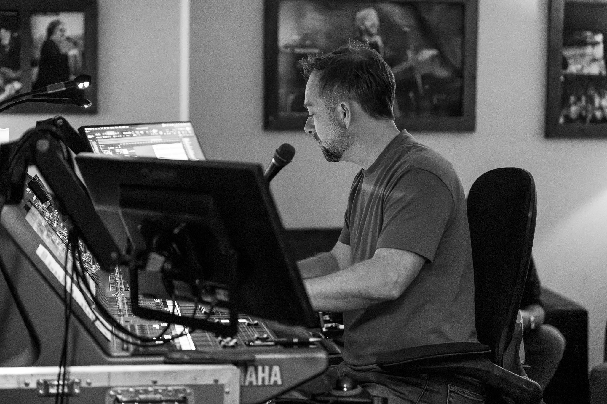
Services
From the first mic check to the final master, on a stage, in a studio, in a ballroom or over a remote link.
Front-of-house and monitor mixes for bands, stages and productions, shaped to the room and the crowd in it.
Balanced, translatable mixes built from your recorded tracks and ready for any playback system.
Capture performances from wherever you are, with Jeremy guiding the session and running the recording remotely.
The final polish for release: level, tone and consistency across a single track or a full project.
System and signal-flow design for events, venues and productions, planned well before load-in.
Measuring and aligning PA systems so every seat gets clear, even coverage.
Lead audio for conferences, keynotes and meetings: clear speech, dependable playback and no surprises.
Audio for broadcast and streamed productions, mixed for clear, consistent program sound.
Live & broadcast
Jeremy mixes live sound for touring productions and large rooms, and brings the same ears to broadcast, streaming and location recording.
New Constellation's client list includes Kiefer Sutherland, Dr. John, Dave Matthews, Dead and Company, Lifehouse, 1349, Celtic Frost and Triptykon.
Gallery
Front-of-house positions, measurement rigs and broadcast set-ups from the road.
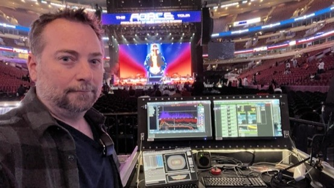
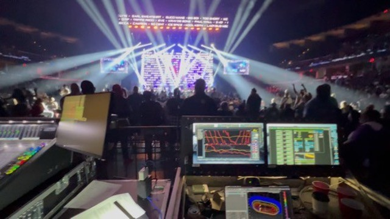


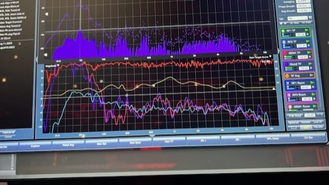
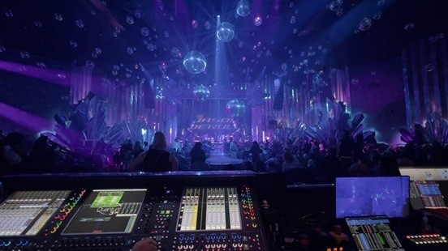
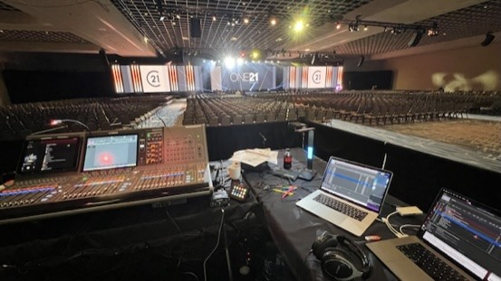


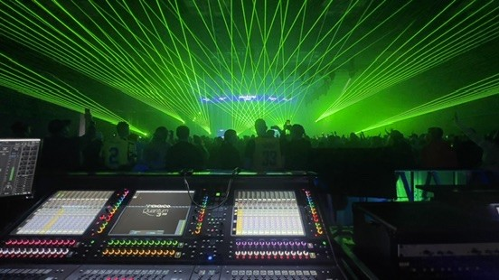


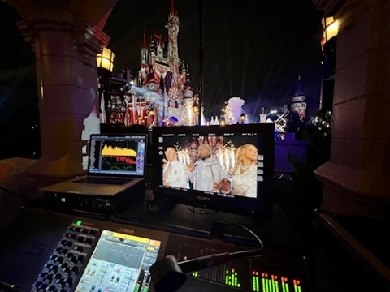

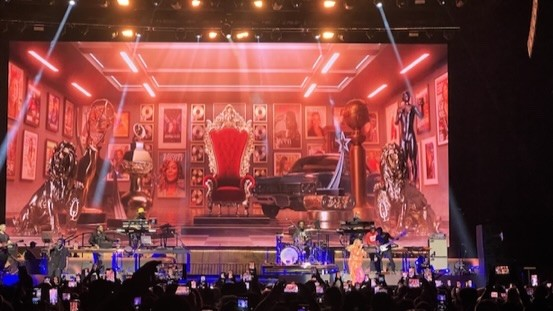
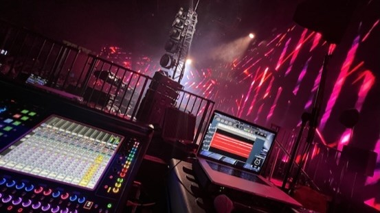

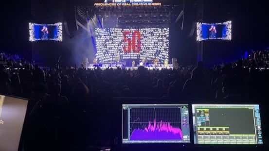


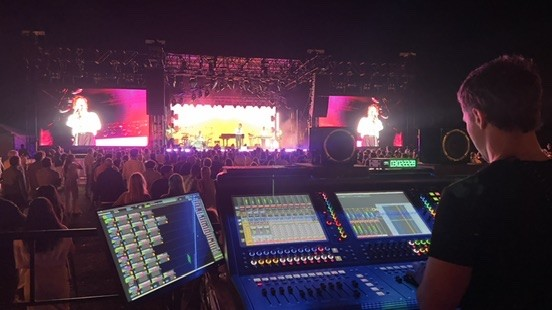
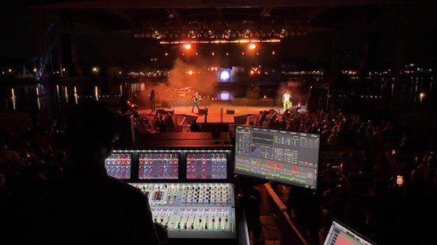

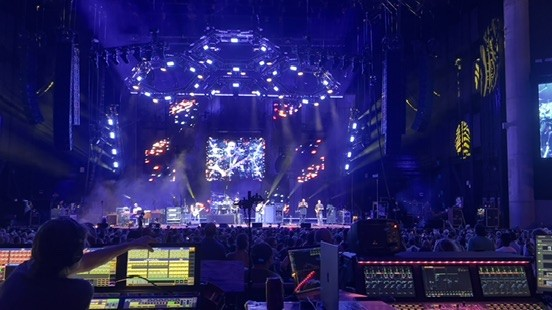
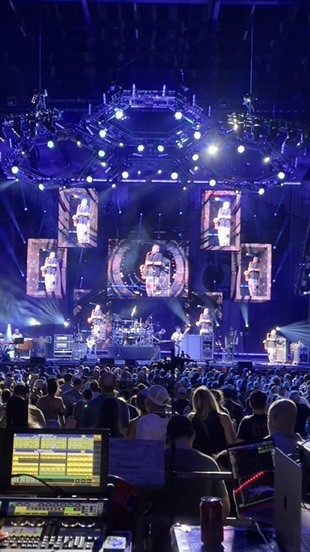
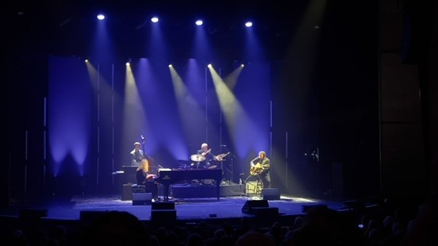


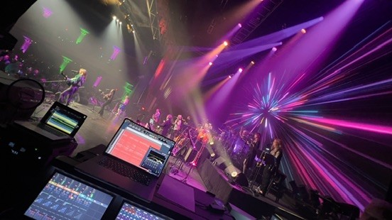

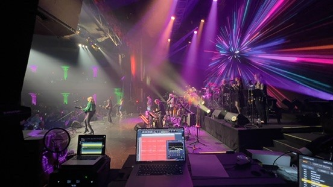

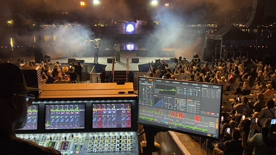


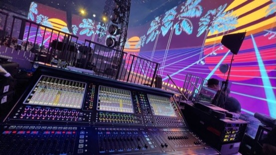


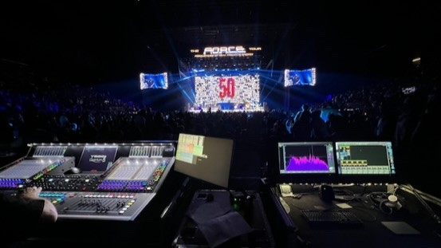


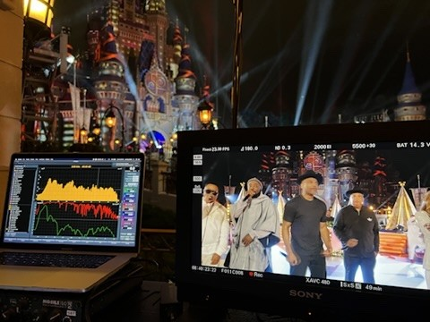

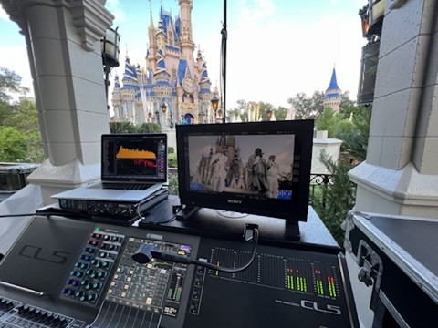
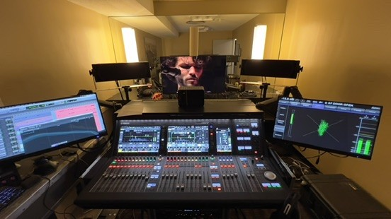
The studio
Jeremy co-owns New Constellation with producer Jarrett Pritchard. The partners founded it in 2012 as a remote company and opened a full studio around 2014. They plan, produce, engineer and master albums, broadcast shoots and other projects, and design sound for film, television and web content.
Every project is built from scratch instead of from mixing templates. Digital and analog tools work side by side, from drum tuning and instrument choice through tone design to the final mix.
The partners hold certifications from Avid, DiGiCo, L-Acoustics and Dolby Atmos.
Software
Tools built to solve problems on live shows and in the studio.
Controls outboard effects over MIDI from a rack-style view. It shows the Lexicon PCM96 front panel and its preset menu, and saves named rack layouts.
Reads a live-event show flow and builds a QLab 5 show file with numbered audio cues, preloading the audio files from a folder.
A real-time analyzer that measures spectrum and SPL and weighs the result against equal-loudness curves, to show how a mix translates to the listener.
About
Jeremy is an audio designer and A1 mix engineer. His work spans corporate events, live stages, studio sessions, remote recording and broadcast.
The thread through all of it is the concierge approach: understand what the room, the artist or the client needs, then take care of the sound so they can focus on the moment.
He co-owns the New Constellation recording studio with producer Jarrett Pritchard. Between them they bring nearly 30 years of experience across genres and formats.
Contact
Send the date, the venue or format, and what you need covered. Jeremy will reply with next steps.
ConciergeOfSound@icloud.com